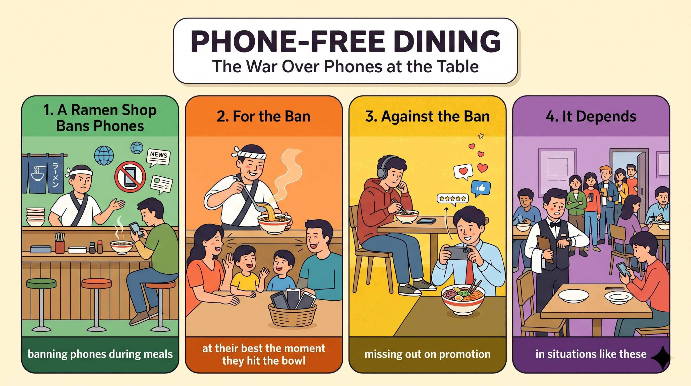

2026 年 1 月，埼玉一家拉麵店禁止用餐時使用手機；店主看過太多客人盯著螢幕，讓麵放涼。
made international news支持者認為食物一上桌最好吃；手機收起來後，家人會多交談、更關注彼此。
the moment it is served批評者指出獨自用餐的人不會打擾別人，而且餐廳可能錯失顧客發文帶來的宣傳。
miss out on free promotion座位有限的小店若客人一直看手機，等候時間會變長；專家認為最佳規則取決於情況。
depends on the situationa ramen shop (S) + made (V) + international news (O)。
when its owner banned phones during meals 是時間副詞子句。
In January 2026,（時間副詞片語）a ramen shop in Saitama, Japan,（主詞＋地點）made international news（動詞＋受詞）when its owner banned phones during meals.（when 時間子句）語塊 1（2026 年 1 月）➔ 語塊 2（日本埼玉縣一家拉麵店）➔ 語塊 4 提前（因為店主禁止顧客用餐時使用手機）➔ 語塊 3（而登上國際新聞）
時間「2026 年 1 月」先翻，主詞的地點由大到小排好。
its owner banned phones 主詞動詞齊全，是時間子句。左邊是 made international news，不是名詞，所以 when 不是關係副詞，而是一般的時間連接詞。make (the) news／headlines；ban sth＝forbid／prohibit sth。The owner (S) + had watched (V) + diners (O) + stare ... and let ... (O.C.)。
watch + O + 原形 V，兩個原形 V（stare、let）用 and 連接；let + O + 原形 V（go）。
The owner had often watched（主幹（過去完成式））diners stare at their screens（受詞＋原形 V）and let their food go cold.（第二個原形 V）語塊 1（店主早已多次看到）➔ 語塊 2（用餐的客人盯著螢幕）➔ 語塊 3（任由食物變涼）
主幹「店主早已多次看到」先翻，加「早已」表示禁令之前。
stare at their screens 和 let their food go cold。watch + O + V（全過程）vs. V-ing（進行中）；had + p.p. 表過去的過去。slow meals (S) + can be (V) + a serious problem (C)。
Because the shop has only six seats and limited space 是原因副詞子句。
Because the shop has only six seats and limited space,（Because 原因子句）slow meals（主詞）can be a serious problem.（動詞＋補語）語塊 1（由於這家店只有六個座位、空間有限）➔ 語塊 2（用餐時間拖長）➔ 語塊 3（可能會造成嚴重的問題）
Because 子句在句首，照順序翻「由於這家店只有六個座位、空間有限」。
the shop has only six seats and limited space 主詞動詞齊全 ➔ because 是連接詞。如果後面只有名詞（the limited space），就要改成 because of。limited space／time／seating；because + 子句＝since／as + 子句。The policy (S) + started (V) + a global debate (O)。
about how people should dine in the digital age：about 後接 how 名詞子句。
The policy quickly started（主幹）a global debate（受詞）about how people should dine in the digital age.（about＋how 名詞子句）語塊 1（這項規定很快就引發）➔ 語塊 3 提前（一場關於人們在數位時代該如何用餐的）➔ 語塊 2（全球論戰）
主幹「這項規定很快就引發」先翻。
how people should dine 整個是名詞子句。a debate about／over sth；dine out（外食）。a debate about how ... 點出爭議核心，報導結構清楚。Supporters (S) + say (V) + that ... (O)。
Supporters say that（主句＋名詞子句引導）food tastes best（子句主幹）the moment it is served,（the moment 時間子句）so customers should pay full attention to it.（so 結果子句）語塊 1（支持者表示）➔ 語塊 3 提前（食物在一上桌的那一刻）➔ 語塊 2（最好吃）➔ 語塊 4（因此顧客應該專心享用）
報導先交代誰說的：「支持者表示」，再進入論點。
it is served 完整 ➔ 時間連接詞「一……就」。the moment = as soon as = once；pay (full) attention to + N。Supporters say that ...／Critics argue that ...，正反分明。They (S) + also report (V) + that ... (O)。
They also report that（主句）when phones are put away,（when 時間子句（被動））family members talk more（子句主幹一）and connect with each other.（子句主幹二）語塊 1（他們也指出）➔ 語塊 2（手機收起來後）➔ 語塊 3（家人會聊得更多）➔ 語塊 4（也更能拉近彼此距離）
先翻「他們也指出」，接著照順序翻 when 子句「手機收起來後」。
phones are put away 是被動（手機被收）。put away＝put aside；connect with sb（與人交流）。Critics (S) + argue (V) + that ... (O)。
Critics, however,（主詞＋轉折副詞）argue that（動詞＋名詞子句）many diners eat alone and use their phones（名詞子句主幹）without bothering anyone.（without＋V-ing）語塊 1 轉折提前（然而，批評者）➔ 語塊 2（主張）➔ 語塊 3（許多客人獨自用餐、使用手機）➔ 語塊 4（卻不會打擾到任何人）
先把 however 翻成「然而」放句首，再翻「批評者主張」。
that：左邊動詞、右邊完整句 ➔ 名詞子句。argue that + 子句（主張）；without + V-ing：He left without saying goodbye.Critics, however, argue that ... 轉到反方，是標準寫法。Others (S) + point out (V) + that restaurants may miss out on ... (O)。
, which is ... 是非限定關代，指前面整件事。
Others point out that restaurants may miss out on free promotion（主句＋名詞子句）from customers who post photos and reviews online,（來源＋who 關代）which is especially important for new businesses.（非限定 which）語塊 1 前半（也有人指出，餐廳可能錯失）➔ 語塊 2 提前（顧客在網路上發布照片和評論所帶來的）➔ 免費宣傳 ➔ 語塊 3（這對新開的店家尤其重要）
先翻「也有人指出，餐廳可能錯失」，接著處理宣傳的來源。
point out that ...（指出）；, which 可指前面整句。, which is especially important for ... 強調影響族群，論證更有力。Some workers (S) + note (V) + that diners ... often end up staying ... (O)。
Some workers note that（主句）diners who are constantly checking their phones（子句主詞＋who 關代）often end up staying much longer（子句動詞（end up＋V-ing））than necessary.（比較對象（省略））語塊 1（有些員工提到）➔ 語塊 2 提前（一直在看手機的客人）➔ 語塊 3＋4（最後往往待得比需要的久得多）
先翻「有些員工提到」，再找到子句主詞 diners 和它的 who 子句。
end up。很多同學把 checking 當動詞，就讀錯了。
end up + V-ing；than necessary／expected／usual（比較省略）。many experts (S) + believe (V) + (that) the best rule depends on ... (O)。
not on ... 對比 on the situation。
As a result,（轉折副詞片語（結果））many experts believe（主句）the best rule depends on the situation,（名詞子句（省略 that））not on a single ban for everyone.（對比片語）語塊 1（因此）➔ 語塊 2（許多專家認為）➔ 語塊 3（最好的規則應視情況而定）➔ 語塊 4（而不是一體適用的禁令）
句首 As a result 翻「因此」，接著「許多專家認為」。
the best rule depends on the situation 是完整句子 ➔ 名詞子句，that 省略。not on a single ban 省略了 depends，完整是 not (depend) on a single ban。用 not 帶出對比，結論更鮮明。
depend on = rely on = be decided by；As a result = Therefore。1. 請選出最適合填入 (1) 的字：
2. 請選出最適合填入 (2) 的字：
watch + O + 原形 V。3. 請選出最適合填入 (3) 的字：
4. 請選出最適合填入 (4) 的字：
miss out on + N。5. 請選出最適合填入 (5) 的字：
depend on the situation：視情況而定。6. The festival attracts visitors from over 30 countries, so it has become a truly ________ event.
7. The ________ of the bakery wakes up at four every morning to make fresh bread.
8. This museum is ________ popular with young children because of its hands-on activities.
especially popular with：尤其受歡迎。9. Only a ________ number of students can join the summer camp, so sign up early.
a limited number of：數量有限的。10. 下列哪一句文法正確？
may + 原形 miss out on + N。11. 「批評者主張，獨自用餐的人不會打擾到任何人。」最佳英譯是：
12. 下列哪一句文法正確？
end up + V-ing；先行詞 diners 複數，check 不加 s。13. Why did the owner make the phone rule?
14. According to critics, why is a phone ban a bad idea?
15. What do many experts believe?